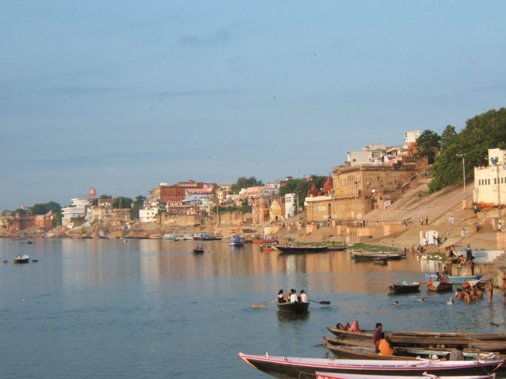

The river, one morning at a time
A gentle way to meet the ghats: arrive quietly, observe respectfully, and leave the camera down sometimes.
A SHORT FIELDNOTE

Start without a checklist
Walk only as far as feels comfortable. Sit somewhere that does not block a path, and watch the riverfront become a neighbourhood rather than a backdrop.
Know when not to photograph
Ask permission before portraits. Keep a respectful distance from worship and cremation areas; if a moment feels private, put the camera away.
MAKE IT YOURS
Worth a place in your plans?
Your personal rating only. No public averages.
A little note to yourself
Private notes are saved only in this browser. They are not public comments, reviews, or messages to the journal.
Your choices stay on your device. No visitor counts, invented reviews or site-wide popularity scores.